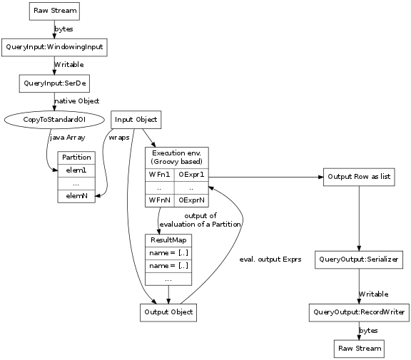
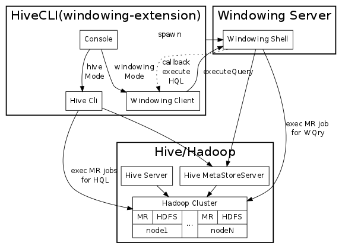
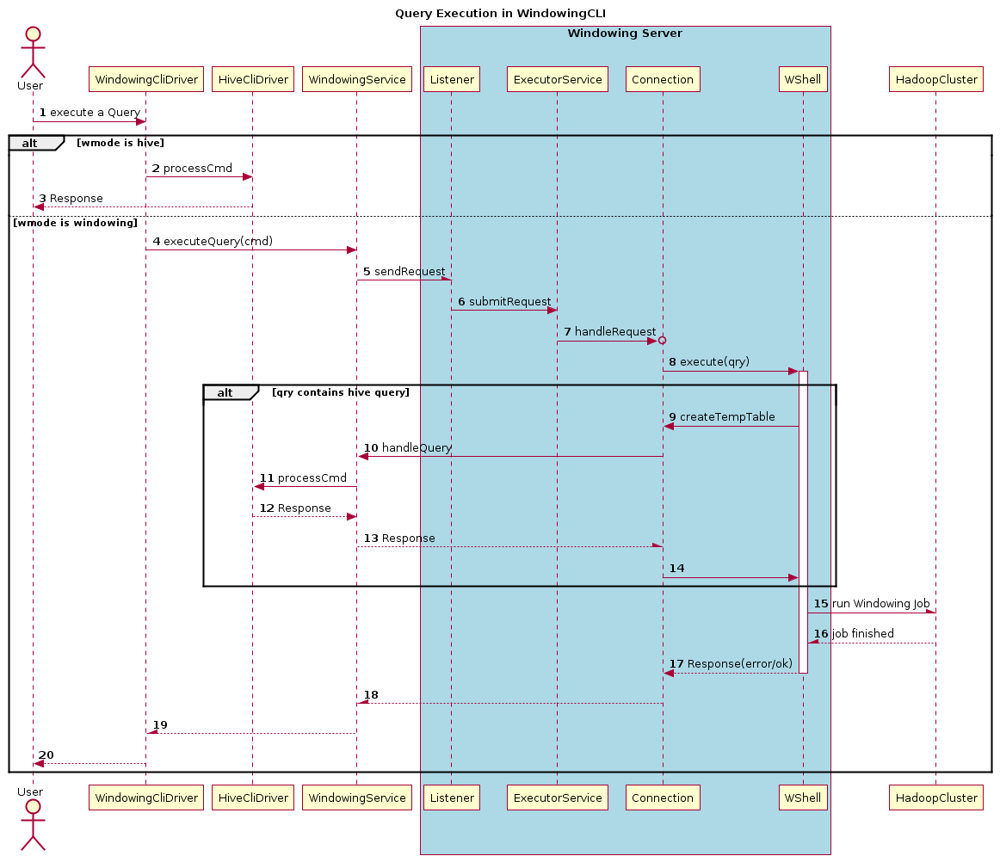

windowing
Table of Contents
- 1 Modes
- 2 Default Query Execution
- 3 Windowing CLI operation
- 4 Reading and Writing data
- 5 Composite Record mechanics
- 6 Windowing processing in a MR Job
- 7 The Language
- 8 Parsing and Translation
- 9 A Windowing Function
- 10 Where Clause handling
- 11 Hive Client
- 12 Testing
1 Modes
| Mode | Translator | Executor |
|---|---|---|
| Local | LocalTranslator | Executor |
| TEST | LocalTranslator | TestExecutor |
| HIVE | HiveTranslator | Executor |
| HIVETEST | HiveTranslator | TestExecutor |
| MR | MRTranslator | MRExecutor |
| MRTEST | MRTranslator | MRExecutor |
- Translators differentiated by how they setup the Queries WindowingInput
- LocalTranslator:
- expects complete details of input: keyClass, valueClass, iFmtCls, serDeCls, columnNames, columnTypes and WindowingInputCls
- works with TableWindowingInput; reads input using FileSystem API
- was used when not tied to Hive Metastoreserver
-ni more used
- HiveTranslator:
- used when Hive Script Operator spawns WindowingDriver
- not actively maintained
- MRTranslator:
- works with MRWindowingInput
- mRWindowingInput needs a tableName in the Query; and extracts the SerDe by talking to the MetaStoreServer
- LocalTranslator:
- Executors: differentiated by how result rows are output
- TestExecutor:
- configured with a PrintStream; default is System.out
- output row is created as a list and printed to PrintStream
- used in BasicTests.
- MRExecutor:
- is bridge between Query & mR Job.
- Setups a HiveConf for the Job
- sets the Query and temptable created(for hive query) in conf
- invokes job.run
- TestExecutor:
- Why do we have MR & MRTEST modes
- utilized by WindowingDriver to decide how to set WINDOWINGJARFILE
- this needs to be cleaned up
2 Default Query Execution

- The execution of Windowing Functions & expressions happen in a GroovyShell. There is a GroovyShell associated with each RunningContext. This Shell is attached to the Query.
2.1 The Input Row
- Each Query has an associated WindowingInput. This is used to read the next structured row.
- This Object is converted to a ArrayList using ObjectInspectorUtils.copyToStandardObject
- These are held as sets in a Partition Object.
- An InputObject is a Groovy Binding that is associated with an index of the Partition object.
- When a value is requested from it; it gets the value from the underlying StandardOI.
2.1.1 TODO deal with the original structure; avoid converting to a StandardObject
2.2 Partitioner
- is responsible for breaking up a stream of Input rows into a stream of Partitions.
- it calls on the WindowingInput for the next set of rows and collects them into a Partition object
2.2.1 TODO optimize comparison in Partition object; Convert first row of Partition only once.
2.3 The processing of Windowing Functions
- wrap the input stream in a Partioner. Now process each Partition
- Maintain a ResultMap( ExpressioName -> List )
- for each WindowingFunction invoke processPartition(p).
- the processPartion contract requires the WFunction to return a list whose size is equal to the Partition's size. The elements of the list are of type specified by the Function's signature.
2.4 The Output Object
- is also a Groovy Binding.
- it encapsulates an InputObject
- it also encapsulates the ResultMap for a partition.
- a name is resolved either as a evaluated value or as an input column. The InputObject associated with it specifies the row in the Partition that is used.
- Output Object also provides functions usable in the select clause. Currently it has the lead and lag functions.
2.5 The generation of Output Rows for a Partition
- An OutputObj is associated with the Partition and its ResultMap
- now for each row in the Partition:
- the input row is bound to the OutputObj
- the whereClause is evaluated to decide if this row needs to be Output
- if yes:
- an output array is constructed by evaluating expression for the OutputColumns of the Query.
- The Array is serailized using the Serializer associated with the query
- and wriiten using the RecordWriter associated wit the Query.
3 Windowing CLI operation
3.1 Overall Architecture

3.2 Query execution

4 Reading and Writing data
- query is associated with a input Deserializer and an output SerDe.
4.1 The WindowingInput interface
- extends the RecordReader interface. The RecordReader interface provides a way for rows to flow as Writables from the Hive Script Operator to an external program. This was chosen because the first integration developed was via the Script Operator.
- A WindowingInput is also responsible for providing a SerDe for the input. So that raw Writables can be transformed to structured objects.
- A WindowingInput is setup during translation by the setupWindowingInput(Query) call. A WindowingInput class is closely associated with a particular Translator.
4.1.1 LocalTranslator and TableWindowingInput
- used to read directly from a File. Bypasses hive metadata layer. Hence Query must specify all the details.
- the query must specify:
- the Key & Value Classes
- the InputFormatClass
- the SerDe class; the Column Names and Types of records
- the location of the directory containing the data files
- TableWindowingInput then
- creates a SerDe instance
- validates the tablePath
- setups an InputFormat instance
- reads the splits for the Path using the FileSystem API
- sets itself for iteration of the input rows; gets the RecordReader from the first split
- the iteration logic drains the current RecordReader. Once done it tries to open the next split if it exists and starts returning rows from it; otherwise it stops
4.1.2 HiveTranslator & HiveWindowingInput
- this is used when the Hive Script Operator spawns a Windowing Process
- The Script Operator is configured to stream data using the TypedBytesRecordWriter
- So on the WindowingRecordReader side the corrsponding TypedBytesRecordReader is used to read Writables from the raw stream.
- The Reader is configured to read from System.in, as this is the mechanism used by Hive Script Operator
- The Query must provide details about the structure of the
records. So the query must contain:
- the SerDe class; the Column Names and Types of records
4.1.3 MRTranslator & MRWindowingInput
- this is used when Windowing operations run in the Reduce Phase of a MR Job.
- In this situation the WindowingInput is not as a source of Writables; but it still used to provide the Deserializer to convert a raw Writable into a structured record.
- The information about the table is read by making a connection to a Hive MetaStore Server.
- The Query only needs to refer to a Hive Table.
- handling embedded Hive Query
- in place of a Hive table a hive query may alternatively be specified
- in this case the Query is wrapped in a CTAS statement; the tableName is generated using the currentTimeMillis(); and the temptable is used as the input to the Query.
4.2 Writing Result Rows
- the translator infers the types and names of the columns of the output record.
- currently the OutputSerDe is hard-coded: (1/13/12 this is no more the case, see Enhacing Output Behavior)
- LazySimpleSerDe in MR mode
- TypedBytesSerDe in other modes
4.2.1 MR mode
- the MR job is configured using the outputformat specified in the Query. Currently tested with TextOutputFormat.
- The output SerDe is fixed to LazySimpleSerDe
- In the Reduce function the output columns are converted using the LazySimpleSerDe
- And then passed to the OutputCollector
4.2.2 Default behavior (non MR mode)
- data is wriiten to System.out
- data is written using the TypedBytesRecordWriter
- so in the case of Hive Mode
- output is streamed back to the Hive Script Operator as Writables which are read using the corresponding TypedBytesRecordReader
- in Local mode data is written to System.out using the same TypedBytesRecordWriter
- there is a TestExecutor that shortcircuits writing output by directly writing the output columns of a row as an array to System.out
4.3 Enhacing Output Behavior
4.3.1 The Query Interface
| parameter | description | default |
|---|---|---|
| MR mode: | ||
| output_file_name | where the Output should be stored | required |
| output_serde, | specify serde and fileformat class, | TypedBytesSerDe, |
| output_fileformat | and serde properties | User-specified |
| Hive/Local mode: | ||
| output serde | TypedBytesSerDe | |
| output RecordWriter | TypedBytesRecordWriter |
- Output clause
into PATH=<user specified path>
[ SERDE <serdeClass> (WITH SERDEPROPERTIES namevalue*)?
( RECORDWRITER <recordwriterClass> |
OUTPUTFORMAT <outputformatClass>
)
]
- QuerySpec:TableOutput datastruct
class TableOutput
{
String path
String serDeClass = "org.apache.hadoop.hive.contrib.serde2.TypedBytesSerDe"
Properties serDeProps = new Properties()
String formatClass = 'org.apache.hadoop.mapred.TextOutputFormat'
String recordwriterClass = "org.apache.hadoop.hive.contrib.util.typedbytes.TypedBytesRecordWriter"
public String toString()
}
- Query;QueryOutput
class QueryOutput
{
ArrayList<OutputColumn> columns = []
StructObjectInspector outputOI;
SerDe serDe
StructObjectInspector processingOI;
RecordWriter wrtr
}
- Translation hooks:
- validateOutputSpec
- MR: valid serDe, format; no writer
- Rest: valid serDe, writer; no outputformat
- getOutputSerDe() : based on QSpec serDeClass
- setupOutputWriter()
- not needed in MR mode; but validate formatClass is valid.
- validateOutputSpec
5 Composite Record mechanics
5.1 Types
- a DataType<T> captures type information about a WritableComparable class
- A DataType can be asked to create, cast, clone the type T it represents
- It also has a RawComparator and can be asked to raw compare to byte arrays representing instances.
- Basic DataTypes are BOOLEAN, BYTE, SHORT, INT, VINT, LONG, VLONG, FLOAT, DOUBLE and TEXT
5.1.1 CompositeDataType and CompositeWritable
- represents a structure of DataTypes
- structs may contain structs
- a CompositeDataType can be created from a Hive StructObjectInspector
- a CompositeWritable represents an instance of a CompositeDataType struct
5.1.2 CompositeSerialization
- a CompositeDeserializer casts Writable to the approriate CompositeType before invoking readFields.
- Conf parameter "windowing.composite.datatype" specifies the CompositeDataType details. A CompositeDataType instance is instantiated based on the valueof this parameter
6 Windowing processing in a MR Job
6.1 Job definition
6.1.1 Configure Hive Table as Job Input
- get the Hive Table details from the Hive MetaStoreServer
- add the StorageDescriptor location as the inputPath for the Job
- set the Job's InputFormat class based on the information the StorageDescriptor
- set the Job's MapOutputValueClass based on the InputFormat(get it from its RecordReader)
6.1.2 Type Information
- From the Query's sort & partition columns a ObjectInspector and then a CompositeDataType is constructed. This is added to the Job Conf. The order of the columns is the partition columns followed by the sort columns.
- Job "io.serialization" is set to CompositeSerialization
6.1.3 Remaining Parameters
| Param | Value | Notes |
|---|---|---|
| jar | windoingJar file | enables these jobs w/o |
| specified in the running | having to add the jar | |
| context | to the task nodes beforehand. | |
| OutputValueClass | Text | hardcode for now |
| MapOutputKeyClass | CompositeWritable | used to extract fields in |
| Partition + Sort clause. | ||
| OutputKeyClass | NullWritable | |
| PartitionerClass | Partitioning | partition only by Part. columns |
| OutputKeyComparatorClass | OutputKeyComparator | |
| OutputValueGroupingComparator | OutputGroupingComparator | |
| windowing.input.database | db set in Qry | currently always null |
| windowing.input.table | table from Qry | |
| windowing.partition.cols | from Qry | represented as comma seperated |
| String | ||
| windowing.sort.cols | from Qry | represented as comma sep. String |
| windowing.sort.order | from Qry | comma sep; ASC/DESC list |
| windowing.number.of.partition.columns | computed from Part. list | |
| windowing.query.string | the Qry | currently Qry is reparsed at |
| each Reducer | ||
| windowing.hivequery.temptable | name of TempTable | the TT created for the embedded |
| Hive Query. |
6.2 Job Execution
6.2.1 Map Job
- On Configure read the sortCols and CompositeDataType from the Conf
- Map function: create a CompositeWritable containing the columns from the Partition + Sort lists. Output this CompositeWritable and the input Writable as the Key, Value
6.2.2 Partitioning
- we want all the rows having the same values for the Partition columns to go to the same reducer.
- the Partition class uses the "windowing.number.of.partition.columns" param to only compare based on the p first elems of the CompositeWritable.
6.2.3 OutputGroupingComparator
- configured to sort rows in a Reduce Partition.
- in this case these are sorted based on all the elements in the CompositeWritable.
6.2.4 Reduce Job
- operates almost identically to the Default Query Execution
- Partitions are formed manually by creating a Partition object
- Output Writables are written to the OutputCollector.
- currently the query String is passed in the Job Conf. Hence each Reducer reparses the Query.
- TODO pass a translated representation of the Query in the Job.
- TODO pass a translated representation of the Query in the Job.
7 The Language
8 Parsing and Translation
9 A Windowing Function
10 Where Clause handling
- currently where clause is parsed but not translated
- where clause is a Groovy expression
- set it on Query; compile it
- in Executor apply where expression to each row and output only rows that eval to true
11 Hive Client
- WindowingShell has a HiveClient that can execute a Query
- 2 implementations of HiveClient:
- for tests: connects to HiveServer
- in WindowingServer asks Client to execute Query